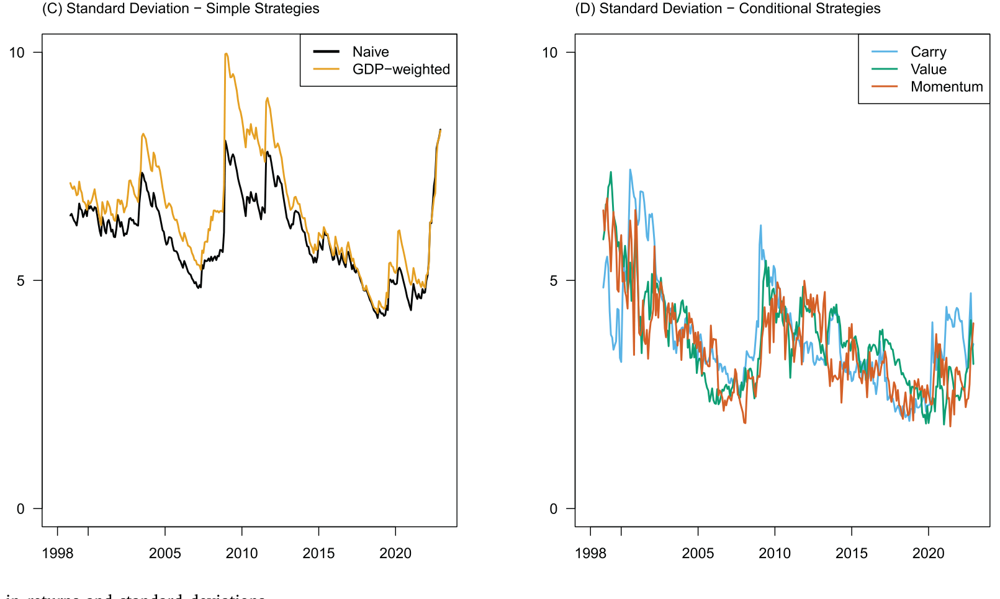
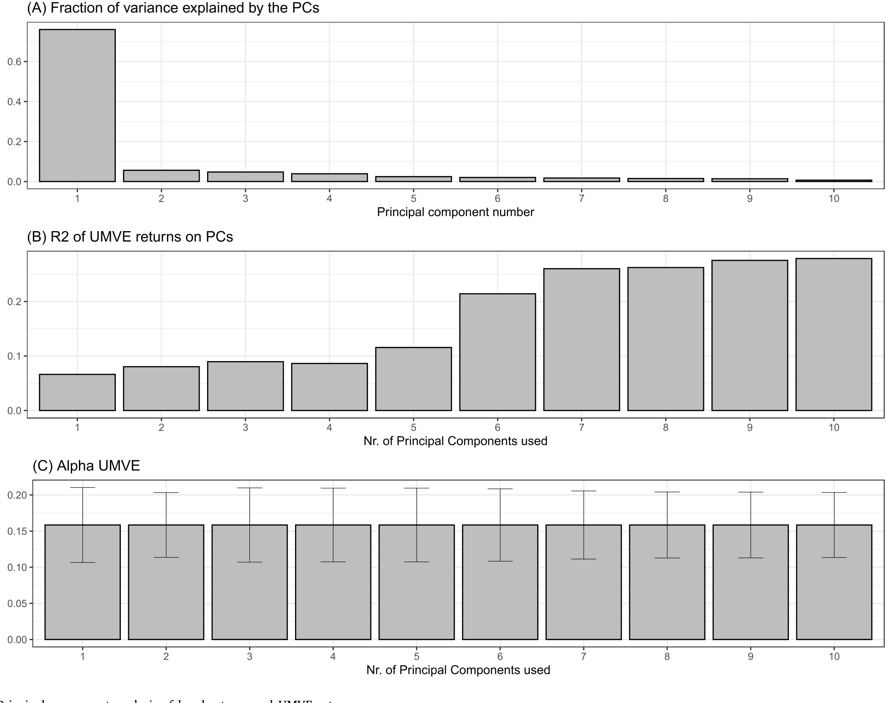
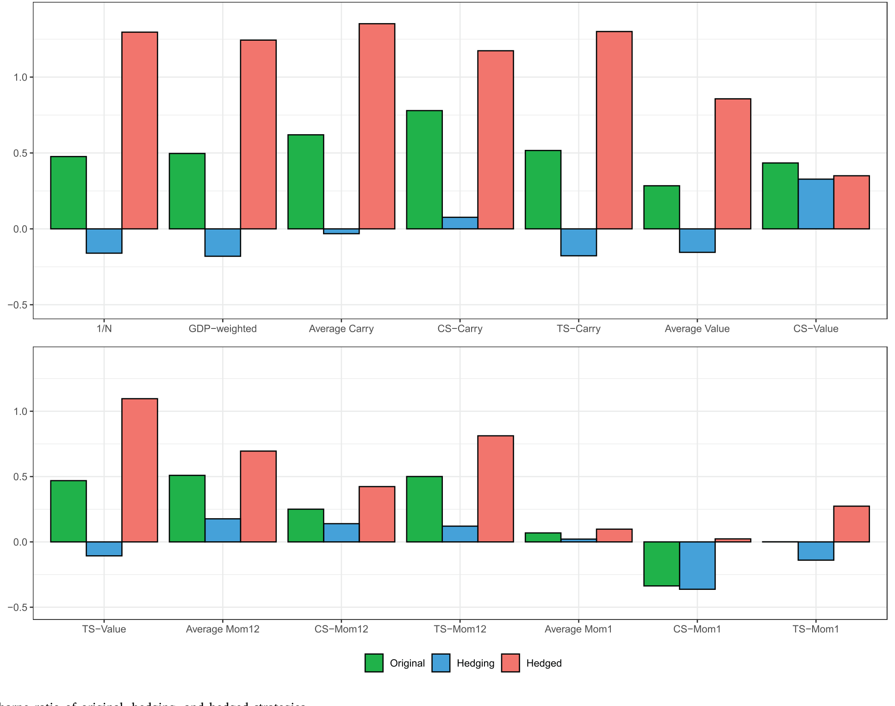
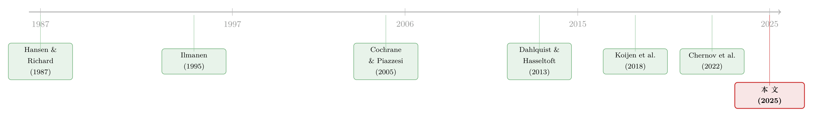

一起涨跌，不等于一起被定价：国际国债里那条「被付了钱」的暗线
本文读的是 Randl, Simion & Zechner (2025, Journal of Financial Economics)：把十个发达国家的国债当成「一类资产」，作者用样本期内无条件均值-方差有效 (unconditional mean–variance efficient, UMVE) 组合构造出一个随机贴现因子 (stochastic discount factor, SDF)，给国际国债定价。最反直觉的发现是——这些国债之间有极强的共同波动（前 3 个主成分解释了 86% 的方差），但这部分「一起涨跌」几乎没有被市场定价（所有主成分加起来只能解释 UMVE 收益约 30% 的变动）。于是一个自然的策略浮现：把这些没被付钱的风险对冲掉，夏普比率几乎翻倍。
1 一个被忽视的大市场
先说一个会让很多人意外的事实：主权债券市场是全球第二大的资产类别，仅次于股票。可就是这样一个体量惊人、流动性极好的市场，学术界对它的「组合视角」研究却出奇地少。
这是为什么呢？翻翻文献你会发现，国债定价模型几乎清一色是单国 (single-country) 设定的——美国的期限结构、德国的收益率曲线、日本的久期选择——一个国家一个模型，各算各的。而主动管理那一支，关注的也大多是「久期该长该短」或者「同一个市场里哪只券被错杀了」，很少有人认真问一句：钱该怎么在不同国家的国债市场之间分配？ 连经典教科书（Bodie et al., 2024）里讲到跨市场配置时，也是寥寥数语带过。
与此同时，现实世界却在往相反的方向跑。过去三十年里，美国「全球型」固收基金相对「国内型」基金的净资产之比差不多翻了一倍——从 1995 年的约 7.5% 涨到 2022 年的近 15%。投资者真金白银地在做国际分散，可理论却还停留在「一国一议」。
本文要做的，就是把这道裂缝补上：抛开单国视角，把发达国家国债当成一个完整的资产类别来定价。
2 先把「资产」定义清楚：对冲掉汇率的国债
要把不同货币的国债放在一起比，第一步是处理汇率。作者的做法很「机构化」：每个月，用当地货币的短期拆借去融资、买入当地的 10 年期国债，同时用一个汇率远期把货币风险对冲掉。这等价于实务里最常见的操作——持有外币债券、再用 FX 远期合约 (FX-forward) 锁住汇率。作者把这类收益称为汇率对冲的 (FX-risk-hedged / currency-hedged) 收益。
具体地，国家 \(i\) 的 10 年期国债月度超额收益定义为：
$$ rx^{i}_{t+1} \;:=\; rx^{(10Y)}_{i,\,t\to t+1M} \;=\;\left(\frac{P^{(10Y-1M)}_{i,\,t+1}}{P^{(10Y)}_{i,\,t}}\;-\;\frac{1}{P^{(1M)}_{i,\,t}}\right)\frac{S_{i,\,t+1M}}{S_{i,\,t}} $$
这个式子值得拆开看：括号里第一项 \(P^{(10Y-1M)}_{i,t+1}/P^{(10Y)}_{i,t}\) 是持有一个月后债券本身的毛回报（一只 10 年期券过一个月就变成 10 年差 1 个月的券）；第二项 \(1/P^{(1M)}_{i,t}\) 是当地 1 个月货币市场的融资成本；括号外的 \(S_{i,t+1M}/S_{i,t}\) 才是没被完全消掉的那一点点汇率波动。
注意：这种对冲并不能把汇率风险完全清零——式子里那个 \(S_{i,t+1M}/S_{i,t}\) 还在。Koijen et al. (2018) 把这种收益叫「对冲后的美元收益 (hedged dollar return)」。这点为什么重要？因为后文有一个专门的实验，要问：剩下的这一丁点汇率风险，到底有没有被定价？答案是个漂亮的「没有」，先按下不表。
样本是十个发达国家国债市场，作者称之为 G10*：澳大利亚、加拿大、德国（代表整个欧元区）、日本、新西兰、挪威、瑞典、瑞士、英国、美国。它们合起来约占全球本币长期国债市值的 70%。数据来自 Bloomberg 的零息收益率曲线，月频，区间是 1995 年 1 月到 2022 年 12 月。这些国家几乎不可能违约，所以可以干净地把它们的债当作「无违约风险」资产来处理。
先看一组描述性事实。样本期里，除新西兰外所有市场的夏普比率 (Sharpe ratio, SR) 都在 0.4 以上，单国平均约 0.46。光是天真地做 \(1/N\) 等权分散，就能把组合波动率从单国平均的 7.4% 降到约 6.1%（降了差不多 20%），夏普比率升到 0.54；按 GDP 加权也差不多。条件型策略里，套息 (carry) 一枝独秀，夏普比率高达 0.81，价值 (value) 和动量 (momentum) 分别是 0.47 和 0.28。

Figure 1: Time variation in returns and standard deviations
这些数字已经说明：跨国分散对债券投资者是真有用的。但它们也只是热身。接着，一个自然的问题是——这些国债市场的「最优」组合长什么样？它背后定价的，到底是什么风险？
3 核心一步：把真实 SDF 投影到「可交易的债券策略」上
这里就是全文的发动机。作者搭的理论框架，承自 Hansen and Richard (1987)、Ferson and Siegel (2001) 一脉，再到近期的 Chernov et al. (2022)。
思路是这样的。任何一个无套利的市场背后都藏着一个真实的 SDF，但它通常包含很多无法交易的成分。作者退一步：把真实 SDF 投影 (project) 到「用这 \(N\) 个债券市场能构造出的全部交易策略」这个空间上，得到的投影，恰好就由 UMVE 组合刻画。换句话说，我们不奢求看见真实 SDF 的全貌，只要那个「能被债券组合复制出来的影子」就够定价了。
UMVE 组合的权重，是当期协方差矩阵和预期超额收益的函数：
分子 \(V_t^{-1}E_t\) 就是经典的均值-方差权重；真正微妙的是分母那个缩放因子。Hansen and Richard (1987) 早就证明：一个无条件有效的组合必然是条件有效的，反过来却不成立。只有除以分母里那个 \(1+E_t(\mathbf{rx}_{t+1})^\top V_t^{-1}(\mathbf{rx}_{t+1})E_t(\mathbf{rx}_{t+1})\)，才能把每一期的条件有效组合「缝合」成一个跨时无条件有效的组合。
有了 UMVE，定价就一气呵成。对任意组合 \(p\)，无条件的贝塔定价关系是：
$$ E(rx^{p}_{t+1}) \;=\; \beta^{p}\,E(rx^{U}_{t+1}),\qquad \beta^{p}=Cov(rx^{p}_{t+1},rx^{U}_{t+1})\,V^{-1}(rx^{U}_{t+1}) $$
而对应的 SDF 写出来异常简洁：
$$ M_{t+1} \;=\; 1-\big(rx^{U}_{t+1}-E(rx^{U}_{t+1})\big) $$
它满足 \(E_t(M_{t+1}\,rx^{p}_{t+1})=0\)，对所有由基础资产构造的组合和动态策略 \(p\) 都成立。一句话——UMVE 组合的（去均值后的）收益，就是给国际国债定价的那个单一风险因子。
落到实证，构造 UMVE 需要两样东西：预期收益和条件协方差。预期收益用远期价差 (forward spreads) 和实际收益率 (real yields) 来预测；协方差则用收缩 (shrinkage) 方法估计——这一步在高维资产里至关重要，否则估出来的协方差矩阵可能不满秩甚至出现负特征值（关于收缩在资产定价里的妙用，可参见《压缩横截面：因子动物园的尽头，不是更少的因子，而是更聪明的收缩》）。所有权重都只用 \(t\) 时刻的信息算出，收益则在 \(t+1\) 样本外 (out-of-sample) 实现。这一点很关键：定价检验不是事后拟合，而是真刀真枪的样本外预测。
结果如何？这个样本外构造的 UMVE，成功给所有十个 G10* 单国市场、以及一系列动态交易策略定了价。更惊人的是它的夏普比率：从单国平均的 0.46，一跃到超过 1——两倍还多。而且这个预期夏普比率随时间剧烈起伏：在 2008 年全球金融危机 (GFC)、2010–2012 年欧债危机、新冠危机期间都明显抬升，最高点出现在 2022 年第四季度——那正是通胀冲击、货币紧缩、资产估值齐齐下挫的时刻，投资者的边际财富效用很可能在那时飙到了顶点。作者还发现，通胀离散度 (inflation dispersion)——各国通胀率的横截面分散——在 GFC 之后与 UMVE 的预期夏普比率显著正相关。风险的价格，原来跟着宏观的「不齐」一起呼吸。
（顺带一提，把「风险的价格」和「风险的数量」分开来量，正是国债定价近年的一条主线，参见《风险的价格与数量：拆开中美国债的「风险-收益之谜」》。）
4 反转：一起涨跌的那部分，市场没付钱
到这里，故事似乎已经很完整了：找到 UMVE，得到 SDF，夏普比率翻倍。但真正关键、也最反直觉的一步，还在后面。
一个自然的猜想是：既然这些国债能被一个因子定价，那它们「一起涨跌」的共同成分，应该就是被定价的风险吧？毕竟我们对股票市场的直觉就是这样——共同因子驱动共同的风险溢价。
于是作者做了主成分分析 (principal component analysis, PCA)。第一个发现毫不意外：G10* 国债收益有极强的因子结构，前 3 个主成分 (PCs) 就解释了总方差的 86%。这些债确实是手拉手一起动的。
但接着，反转出现了。作者把这些主成分拿去解释 UMVE 收益的变动——也就是去解释那个被定价的风险——结果是：所有主成分加起来，只能解释 UMVE 收益约 30% 的变动。

Figure 5: Principal component analysis of bond returns and UMVE returns
这句话值得读两遍。债券之间那 86% 的「共同波动」，绝大部分是未被定价的风险 (unpriced risk)。市场真正付钱的那条线，和「大家一起涨跌」这件事，几乎是两回事。共同变动 ≠ 风险溢价——这是本文留给读者最深的一道刻痕。
那个被按下不表的汇率实验，也在这里收口：作者发现 UMVE 组合对汇率风险的暴露在经济意义上可以忽略，它的收益与一个专门给货币定价的 SDF 几乎不相关。更妙的是，把 UMVE 收益里与货币 SDF 正交的那部分单独拎出来，它给国际国债定价的能力，和原始 UMVE 一样好。结论很硬：国际国债的被定价风险，和货币的被定价风险，是两种根本不同的东西。 这跟 Lustig et al. (2019) 那条「长端期限溢价与货币溢价相互抵消」的线索遥相呼应。
5 把「没被付钱的风险」对冲掉
如果共同波动大多是不被定价的噪声，那一个做投资的人立刻会想到：为什么要承担它？把它对冲掉不就行了？
这正是本文给实务者的礼物。作者证明，像天真分散、或者套息、价值、动量这类常见的因子策略，里头都裹着大量未被定价的风险。把这部分对冲出去之后，夏普比率显著改善——对一个 \(1/N\) 天真分散组合做这套对冲，夏普比率几乎翻倍；对套息、价值这些策略也有可观提升。

Figure 3: Sharpe ratio of original, hedging, and hedged strategies
更让人放心的是稳健性。这类对冲策略往往需要在不同市场上持有很大的绝对权重，听上去不太可行。作者于是对权重的绝对值层层加限，发现组合表现出奇地稳健；只有在施加「只许做多 (long-only)」的极端约束时才明显跌下来。但作者也指出，long-only 的约束其实过严——样本里除一个市场外都有国债期货可用，专业玩家想做空某个市场并不难。还有一个对实务很实在的结论：要把这套策略做好，准确估计预期收益是关键，估准方差反而没那么要紧。
6 文献脉络
这篇论文站在两条研究河流的交汇处。
第一条是国债收益的可预测性。源头是 Fama and Bliss (1987)，他们记录了预期假说 (expectations hypothesis) 的失败，证明用期限专属的远期价差能预测收益。Cochrane and Piazzesi (2005) 把整条远期曲线用足，提出一个给各期限债券定价的共同因子。Ludvigson and Ng (2009) 加入宏观因子，Cieslak and Povala (2015) 则点出通胀在预测美债收益里的核心地位。把这条线推向国际的，有 Ilmanen (1995) 对六国债券可预测性的开创性研究、Dahlquist and Hasseltoft (2013) 构造的本地与全球因子、Brooks and Moskowitz (2019) 的套息与价值，以及 Lustig et al. (2019) 关于货币套息期限结构的工作。
第二条是从均值-方差有效组合导出 SDF。Hansen and Richard (1987) 奠基，经 Ferson and Siegel 系列，到 Chernov et al. (2022)、Maurer et al. (2022) 把它用在货币市场上。

本文的位置因此很清楚：它借用了第二条河流的 SDF 工具，把它第一次系统地用到第一条河流里那个被长期忽视的资产类别——国际国债——上，并产出了一整套样本外的定价证据、夏普比率的时序性质、以及「共同变动 vs. 被定价风险」这一核心区分。
7 评论与延伸（Q&A + 研究方向）
(a) 几个可能的疑问
Q：UMVE 组合就是 ex-post 把样本拟合到最优，夏普比率超过 1 会不会只是过拟合？
这是最该问的一问，作者也防着这一手。UMVE 的权重只用 \(t\) 时刻可得的信息估计（远期价差、实际收益率、收缩后的协方差），收益在 \(t+1\) 样本外实现，而且这个 SDF 还要去给它「没见过」的单国市场和动态策略定价——这些都不是 in-sample 拟合能轻易蒙混过去的检验。当然，预期收益预测本身的稳定性仍是命门，见下一个研究方向。
Q：「共同波动不被定价」是不是和股票市场的直觉相反？
是的，这正是它的价值。在股票里我们习惯了「共同因子 = 风险溢价」。但本文显示，国债收益 86% 的共同变动中，绝大部分是未被定价的；被付钱的那条线只占 UMVE 变动的约 30%。这提醒我们：因子结构强，不等于因子被定价——PCA 找到的「大」方向未必是「贵」方向。
Q：这里的「对冲未被定价风险」和传统的风险最小化对冲是一回事吗？
不是。传统对冲是去压低总波动；本文的对冲是有选择地剥离那些不带溢价的波动，保留带溢价的暴露。所以它不是在降风险，而是在提高每单位风险的回报——夏普比率改善而非单纯波动下降。
Q：汇率那一项没清零，会不会污染结论？
作者专门做了实验：UMVE 对汇率风险的暴露经济意义上可忽略，且其收益与货币 SDF 几乎不相关；把与货币 SDF 正交的部分单拎出来，定价能力不减。所以残余汇率风险并不是定价的来源——国债风险与货币风险是两码事。
Q：只有十个国家，横截面这么小，结论可靠吗？
小横截面在这里反而是优势。作者明确指出，高维资产空间（如股票）里协方差矩阵常常不满秩、甚至出现负特征值；聚焦在 10 个主要市场让协方差估计更稳。代价是外推到新兴市场、或更细的期限维度时要谨慎。
Q：long-only 时表现大跌，是不是说明策略对散户没用？
某种意义上是的。这套策略依赖做空特定市场来对冲未被定价风险，long-only 约束会把它的核心机制掐断。但对能用国债期货的专业机构（样本里除一个市场外都有期货），做空门槛并不高。
(b) 几个可能的研究问题与提案
1. 把「未被定价风险对冲」搬到公司债 / 信用市场
【经济故事】公司债收益同样有极强的共同因子结构（利率、信用利差），但其中多少是被定价的、多少只是「一起涨跌」的噪声，远不清楚。如果信用市场也存在大量未被定价的共同变动，那对冲它同样可能显著抬升夏普比率。 【可行性】中。需要
TRACE交易数据加发行人层面的利差，识别上比国债难——信用利差里混着违约风险、流动性、税收等多重成分，要先干净地分离出「被定价」的那条线。可借鉴本文的 UMVE 投影框架，但要处理公司债的非同步交易和流动性噪声。
2. 外资持有人结构与「被定价风险」的关系
【经济故事】本文发现通胀离散度驱动风险价格，但没问「谁在持有」。如果一国国债的边际定价者是外国投资者，其风险价格可能更受全球因子牵动；本土持有为主时则更受本地宏观驱动。持有人结构也许能解释 UMVE 风险价格的时序起伏。 【可行性】中。需要
TIC（美国）或各国央行/BIS 的国债跨境持有数据，与本文的风险价格序列做时序回归。识别难点在于持有人结构变化的内生性，可考虑用指数纳入、QE 等外生冲击。
3. 流动性是不是那 70% 「未被定价风险」的一部分？
【经济故事】本文把共同波动判为「未被定价」，但没细究它的成分。一个诱人的猜想是：这部分共同变动里藏着跨市场的流动性共振（危机时一起被抛售）。如果流动性溢价其实被定价、却被 PCA 归进了「共同方差」，那 30% 这个数字可能低估了被定价风险。 【可行性】高。可在 G10* 国债上构造买卖价差、深度等流动性代理，检验它们与 UMVE 收益的相关性，看流动性到底落在「被定价」还是「未被定价」一边。数据
Bloomberg/MTS可得。
4. 风险价格的实时可交易性
【经济故事】UMVE 预期夏普比率在 2022Q4 达到顶点——但这是事后看到的。一个投资者能否实时识别风险价格的高点并据此择时加仓？这关系到本文「风险价格随危机和通胀离散度起伏」这一发现的可操作性。 【可行性】高。直接用本文的预测变量（远期价差、实际收益率、通胀离散度）构造实时风险价格信号，做样本外择时回测。诚实地说，这类择时往往在样本外大幅缩水，结果未必好看，但正因如此才值得做。
8 我的判断与参考文献
贡献。这篇论文最大的价值，不在于又造了一个夏普比率超过 1 的策略，而在于它把「共同波动」和「被定价风险」干净地切开，并证明在国际国债这个大而被忽视的资产类别里，二者几乎不重叠。这是一个概念上的提醒，杀伤面远超国债本身——它对任何「用 PCA 找因子、然后默认因子被定价」的做法都是一记警钟。把成熟的 UMVE/SDF 工具第一次系统地落到国际国债上，并给出样本外的定价证据，这份「填空」做得扎实。
对识别的担忧。我最在意两点。其一，整套结论的命脉是预期收益预测——作者自己也承认「估准预期收益是关键」。可远期价差和实际收益率的预测能力在不同子样本里是否稳定，PCA「30% vs 86%」这个对比对预测设定有多敏感，值得更多压力测试（图 2 那张系数时序图其实就透露了系数本身在动）。其二，样本是十个「几乎不会违约」的发达国家，把违约风险这个维度先验地拿掉了；一旦加入有违约风险的主权债，「被定价 vs 未被定价」的切分会不会变样，是开放问题。
后续想看到什么。我最想看的是把这套框架推到信用市场：公司债和有违约风险的主权债里，那条「被付了钱」的暗线长什么样、和流动性的关系如何（关于谁在持有、如何定价公司债，可参见《谁在持有这张债券，决定了它的价格》）。如果在更脏、更不流动的资产上，「共同波动 ≠ 风险溢价」依然成立，那这篇论文的概念贡献就远不止于国债了。
参考文献
- Asness, C. S., Moskowitz, T. J., Pedersen, L. H. (2013). Value and momentum everywhere. Journal of Finance 68(3), 929–985.
- Bekaert, G., Ermolov, A. (2023). International yield comovements. Journal of Financial and Quantitative Analysis 58(1), 250–288.
- Brooks, J., Moskowitz, T. J. (2019). Yield curve premia. Working paper.
- Chernov, M., Lochstoer, L. A., Lundeby, S. R. H. (2022). Conditional dynamics and the multihorizon risk-return trade-off. Review of Financial Studies 35(3), 1310–1347.
- Cieslak, A., Povala, P. (2015). Expected returns in treasury bonds. Review of Financial Studies 28(10), 2859–2901.
- Cochrane, J. H., Piazzesi, M. (2005). Bond risk premia. American Economic Review 95(1), 138–160.
- Dahlquist, M., Hasseltoft, H. (2013). International bond risk premia. Journal of International Economics 90(1), 17–32.
- Fama, E. F., Bliss, R. R. (1987). The information in long-maturity forward rates. American Economic Review 77(4), 680–692.
- Ferson, W. E., Siegel, A. F. (2001). The efficient use of conditioning information in portfolios. Journal of Finance 56(3), 967–982.
- Hansen, L. P., Richard, S. F. (1987). The role of conditioning information in deducing testable restrictions implied by dynamic asset pricing models. Econometrica 55(3), 587–613.
- Ilmanen, A. (1995). Time-varying expected returns in international bond markets. Journal of Finance 50(2), 481–506.
- Koijen, R. S. J., Moskowitz, T. J., Pedersen, L. H., Vrugt, E. B. (2018). Carry. Journal of Financial Economics 127(2), 197–225.
- Ledoit, O., Wolf, M. (2022). Quadratic shrinkage for large covariance matrices. Bernoulli 28(3), 1519–1547.
- Ludvigson, S. C., Ng, S. (2009). Macro factors in bond risk premia. Review of Financial Studies 22(12), 5027–5067.
- Lustig, H., Stathopoulos, A., Verdelhan, A. (2019). The term structure of currency carry trade risk premia. American Economic Review 109(12), 4142–4177.
- Randl, O., Simion, G., Zechner, J. (2025). Pricing and constructing international government bond portfolios. Journal of Financial Economics 173, 104152.